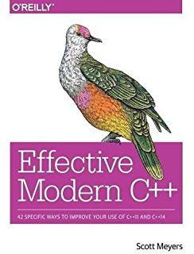
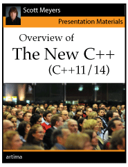

Overview
Because there were so many additions and changes to the C++ language and the libraries, it is virtually impossible to cover everything in one document. (Short of the 1000+ pages of the standard.) This document is just going to give you an introduction to many of these enhancements. Some explanations will be fairly short, and others will be longer. If you really want to know everything about everything, there are links to additional information on each topic. Be warned, though, that some of the documents are quite lengthy and complex and require quite a bit of C++ programming experience.The topics presented should be understandable by anyone that has programmed in C++ for a few months. I am not going to cover topics that I consider "advanced" such as move semantics, rvalue references, universal references, perfect forwarding, variadic templates, or template type deduction vs. auto type deduction. I'm also not covering the additions to the STL (e.g. concurrency, regular expressions, smart pointers).
I present the topics in no particular order. However, some may need to be looked at before others, as they may have some dependencies.
To build these examples, you may need to tell the compiler which "standard" to use. Most of the examples only require a C++11-compliant compiler, but some of them use features from C++14. At the time of this writing, to specify C++11:
for C++14:g++ -std=c++11 foo.cpp clang++ -std=c++11 foo.cpp
To enable C++17, a.k.a C++1z, you would do this:g++ -std=c++14 foo.cpp clang++ -std=c++14 foo.cpp
Notice that g++ will accept either c++17 or c++1z. At the time of this writing, Clang only accepts c++1z. Also, these -std= options replace the -ansi option. You can't use both of them.g++ -std=c++17 foo.cpp g++ -std=c++1z foo.cpp clang++ -std=c++1z foo.cpp
This is the list of included files to compile all of the examples:
Also, you must have this at the top of the file to make the examples compile:#include <iostream> #include <vector> #include <list> #include <deque> #include <set> #include <string> #include <typeinfo> #include <initializer_list> #include <algorithm> #include <bitset>
Finally, if you're really interested in learning this stuff, you must actually use it. Reading about the new features is all fine and good, but you're not going to get proficient by simply reading about them. All of the code examples should compile and run (unless they are purposely showing improper use), so you can copy and paste them into your sandbox and play with them to answer all of your questions like "Can I do this?" and "What happens if I do that?"using namespace std;
Right Angle Brackets (N1757)
This is probably the lowest of the low-hanging fruit to be picked! Consider the problem:For years, C++ programmers have been typing that "work-around". Now, they don't have to. That's about it for this one, but if you want to read more about the history, go here.vector<list<int>> vl; // Error in C++03 because >> is the extraction operator! vector<list<int> > vl; // This was the "fix" in C++03
Deprecated register keyword (P0001R1)
This is (another) attempt to reclaim an existing keyword (much like the auto keyword). For years, the register keyword has only been a hint or suggestion to the compiler, and most compilers ignore it. A C++11 compliant compiler might emit a warning for this code:The warning from clang (using -std=c++11):register int i = 10; // deprecated in C++11
Now, in C++17, the keyword has been removed and the code above generates an error. Compiling with clang and -std=c++17:warning: 'register' storage class specifier is deprecated and incompatible with C++17 [-Wdeprecated-register] register int i = 10; ^~~~~~~~~ 1 warning generated.
Note that, in C++17, the keyword has been removed, but you can't use it for an identifier because it is still reserved for future use:error: ISO C++17 does not allow 'register' storage class specifier [-Wregister] register int i = 10; ^~~~~~~~~ 1 error generated.
Error message from clang and -std=c++17:int register = 10; // use register as a variable name
error: expected unqualified-id
int register = 10;
^
I wrote a discussion about some of the storage classes in C here.
Binary Literals (N3472)
This feature may seem very insignificant, and may well be. But, if you find yourself doing a lot of bit-twiddling, this is a great addition to the language. We always had the ability to write integral literals as decimal, octal, and hexadecimal. Now, we have binary:For now, you'll have to resort to some other way to get std::ostream to display values in binary.// All values are equivalent, decimal 17 int i1 = 17; // decimal int i2 = 021; // octal (leading zero) int i3 = 0x11; // hexadecimal (leading 0x or OX) int i4 = 0b10001; // C++14 binary (leading Ob or OB) // All lines output 17 (decimal) cout << "i1 is " << i1 << endl; cout << "i2 is " << i2 << endl; cout << "i3 is " << i3 << endl; cout << "i4 is " << i4 << endl; // Overriding the default decimal base cout << oct << showbase << i1 << endl; // 021 cout << hex << showbase << i1 << endl; // 0x11 // Unfortunately, there currently is no built-in way to print in binary cout << bin << showbase << i1 << endl; // The bin manipulator doesn't exist!!
For an easy way to print an integer in binary, you can use a std::bitset. This is a templated class that takes a non-type (value) template parameter that represents the number of bits. The class overloads operator<< to display the ones and zeros:
You need to include the proper header file:cout << bitset<5>(i1) << endl; // output: 10001 cout << bitset<8>(i1) << endl; // output: 00010001 cout << bitset<16>(i1) << endl; // output: 0000000000010001 cout << bitset<32>(i1) << endl; // output: 00000000000000000000000000010001
#include <bitset>
Single-Quotation-Mark As a Digit Separator (N3781)
Quick, what's the value of a below?Ok, what's the value of b below?long long a = 10000000000; // Hold on, let me count the zeros...
Those little marks (commas) make it trivially easy to know the exact value of the data. Unfortunately, the comma is already used as an operator so we can't use it here. But, we can use the single-quote character:long long b = 10,000,000,000; // Easy! 10 billion
The single-quotes are just for humans (programmers). The compiler strips them out. This means that the groupings and positions are arbitary. These all mean the exact same thing:long long b = 10'000'000'000; // Still easy to read
One reason for the arbitrary nature of the groupings is that each culture has its own way of grouping numbers. Also, cultures may use different symbols for delimiting the groups. Some cultures use a comma, or a dot, or a space. The C++ culture chose to use the single quotation character.long long b; b = 10000000000; b = 10'000'000'000; b = 100'0000'0000; b = 1'0000'000000; b = 100'00'00'00'00; b = 1'0'0'0'0'0'0'0'0'0'0;
This delimiter will work with any number base:
as well as with floating-point types:int i1 = 1'234'789; // decimal int i2 = 01'234'567; // octal int i3 = 0x1'abc'def; // hexadecimal int i4 = 0b1'000'101; // binary
Notes:float f = 3.14'999'999F; // float double d1 = 1'234.7'200'009; // double double d2 = 1.234'567e+123; // double (e-notation) double d3 = 1.2'3'4'5'6'7e+1'2'3; // crazy!!
Explict Conversion Operators (N2437)
First, a quick review of conversion constructors.C++ has had conversion constructors forever. A conversion constructor is essentially a one-argument constructor. This constructor, then, converts the argument into an object of the class' type. Hence, the term, conversion constructor. Quick example:
class Foo3
{
public:
// Conversion constructor
Foo3(int x) : x_(x)
{
}
private:
int x_;
};
void fn1(const Foo3& f)
{
// Do something with f
}
Foo3 f(42); // Construct a Foo3 object from an integer (conversion constructor)
f = 43; // The conversion constructor is called implicitly
fn1(45); // The conversion constructor is called implicitly
To prevent these automatic and silent conversions, you simply mark the conversion constructor as explicit:
// Explicit conversion constructor
explicit Foo3(int x) : x_(x)
{
}
error: no viable overloaded '='
f = 43; // The conversion constructor is called implicitly
~ ^ ~~
note: candidate function (the implicit copy assignment operator) not viable: no known conversion from 'int' to 'const Foo3' for 1st argument
class Foo3
^
error: no matching function for call to 'fn1'
fn1(43); // The conversion constructor is called implicitly
^~~
note: candidate function not viable: no known conversion from 'int' to 'const Foo3' for 1st argument
void fn1(const Foo3& f)
^
2 errors generated.
Conversion constructors are used to convert some other type (e.g. int) into the object's type (e.g. Foo3). What if we want to go in the other direction: converting the object's type into some other type?f = Foo3(43); // OK, explicit cast fn1(Foo3(43)); // OK, explicit cast
Foo3 f(42); // Construct a Foo3 object from an integer int i = f; // Error: Can't assign a Foo3 to an integer int j = (int)f; // Error: Still can't do it (compiler doesn't know how) int k = int(f); // Nope int n = static_cast<int>(f); // Nope
That's where conversion operators come in. They tell the compiler how to convert (cast) the object into some other type.
Adding a conversion operator to the Foo3 class:
class Foo3
{
public:
// Conversion constructor
explicit Foo3(int x) : x_(x)
{
}
// Conversion operator
operator int() const
{
return x_;
}
private:
int x_;
};
// Conversion operator
explicit operator int() const
{
return x_;
}
However, these will all work fine:int i = f; // Error: Can't implicitly convert a Foo3 to integer
You can convert to any type, as long as you provide the appropriate conversion operator. This function expects a string:int j = (int)f; // OK, explicit C-style cast int k = int(f); // OK, explicit C++-style cast int n = static_cast<int>(f); // OK, explicit C++ named cast
void prints(const string& str)
{
cout << str << endl;
}
Foo3 f(42); // Construct a Foo3 object from an integer
prints(f); // Error: No conversion from Foo3 to string
// You can mark this explicit, if necessary
operator std::string() const
{
return std::to_string(x_); // to_string is new in C++11
}
Foo3 f(42); // Construct a Foo3 object from an integer prints(f); // OK, now prints 42
Notes:
Uniform Initialization (uniform-init a.k.a. Brace Initialization)
This is actually part of Initializer Lists (N2672) described below, but I wanted to demonstrate the simplest uses before the more complicated ones.
Initializing data in C++ is pretty straight-forward, and there are only a few rules that you have to remember.
int a = 1; // Copy initialization ("assignment" operator)
int b(3); // Direct initialization (parentheses)
// Use "assignment" operator and braces to initialize the arrays
int array1[] = {1, 2, 3};
const char *array2[] = {"one", "two", "three"};
struct Point
{
double x;
double y;
};
// Use "assignment" operator and braces to initialize the struct
Point p = {1.0, 2.0};
class Foo
{
public:
Foo(int v1, int v2) : a_(v1) // This is initialization (member initializer list)
{
b_ = v2; // This is assignment
}
private:
int a_;
int b_;
};
Foo f(1, 2); // a_ will be initialized by the constructor
// Simple initialization
double d1 = 3.14; // C++98 (copy initialization)
double d2 = {3.14}; // C++98 (brace initialization, was almost never used)
double d3(3.14); // C++98 (direct initialization)
double d4{3.14}; // C++11 (brace initialization)
int i1 = 3.14; // Clang warns, g++ is silent (even with -Wall, need -Wconversion)
int i2(3.14); // Clang warns, g++ is silent (even with -Wall, need -Wconversion)
int i3{3.14}; // Clang error, g++ error
int i4 = {3.14}; // Clang error, g++ error (new behavior)
int i5 = 1; // OK
double d5 = 2; // OK
double d6{1}; // OK, literal is known at compile-time
double d7{i5}; // Clang error, g++ warning,
int i6{d5}; // Clang error, g++ warning,
int ii1; // Undefined (assume local inside of a function)
int ii2(); // Function prototype! a.k.a "the most vexing parse" (Clang warns)
int ii3{}; // 0 (New)
int ii4 = {}; // 0
int ii5 = int(); // 0
int ii6 = int{}; // 0 (New)
There are times when you will use one of the other forms, but those are more advanced situations."Prefer the {}-initializer syntax for declarations with a named type."
There is a nice consequence of this new syntax. It's called aggregate initialization and it allows you to initialize an aggregate data structure (array or POD structure) using default initialization.
Recall that we could always do this:
struct Point
{
double x;
double y;
};
Point p = {1.0, 2.0}; // Use "assignment" operator and braces to initialize the struct
Point p {1.0, 2.0}; // Use braces to initialize the struct
Point p {}; // x and y are both 0.0
the values of x and y are left undefined (as before).Point p; // x and y are both undefined
The aggregate data type must either be an array or a class, struct, union that meets these criteria:
struct S1
{
public:
void print()
{
cout << "s is " << s << ", i is " << i << ", d is " << d << endl;
}
// All are public
string s;
int i;
double d;
};
S1 s1; // Undefined values for built-in types int and double (string is initialized to "")
S1 s2 = {"", 10, 3.14}; // Initialize all members (public)
S1 s3 = {}; // All members default-initialized {"", 0, 0.0}
S1 s4 {"", 10, 3.14}; // (C++11) Using uniform-initialization
S1 s5 {}; // (C++11) Using uniform-initialization {"", 0, 0.0}
s1.print(); // s is , i is 166494208, d is 3.11218e-317
s2.print(); // s is , i is 10, d is 3.14
s3.print(); // s is , i is 0, d is 0
s4.print(); // s is , i is 10, d is 3.14
s5.print(); // s is , i is 0, d is 0
struct S2
{
public:
void print()
{
cout << "s is " << s << ", i is " << i << ", d is " << d << endl;
}
private:
string s;
int i;
double d;
};
S2 s6; // Undefined values for built-in types int and double
S2 s8 = {}; // All members default-initialized {"", 0, 0.0}
S2 s10 {}; // (C++11) all members default-initialized {"", 0, 0.0}
S2 s11 = {"", 10, 3.14}; // This is still illegal (private)
s6.print(); // s is , i is 166494208, d is 3.11218e-317
s8.print(); // s is , i is 0, d is 0
s10.print(); // s is , i is 0, d is 0
Technically, S2 is not a POD because it has private data. However, now using uniform-initialization, you can default-initialize them without a constructor. This may seem like a small advantage, and it probably is. The one other thing that is potentially more useful is that, since C++17, PODs can inherit from certain base classes (not shown here). This was not possible before C++11.
Links:
Initializer Lists (N2672)
Initializer lists are one of the most important new features (IMHO) in C++. They are somewhat related to the uniform intialization, but they have some caveats. Let's start simple with something that has been missing from C++ since the beginning: Member array initialization.
class Foo2
{
public:
Foo2()
{
// C++98/03 can't initialize a member array. Must use a loop and "assign" values.
for (int i = 0; i < 3; i++)
array_[i] = i + 1;
}
private:
int array_[3]; // How to initialize?
};
class Foo2
{
public:
Foo2() : array_{1, 2, 3} // member array initialization (MUST use braces)
{
// empty body
}
private:
int array_[3];
};
Foo2() : array_( {1, 2, 3} ) // Incorrect
class Foo2
{
public:
Foo2()
{
// empty body
}
private:
int array_[3] = {1, 2, 3}; // member array initialization (equal sign is optional)
};
error: array bound cannot be deduced from an in-class initializer
int array_[] = {1, 2, 3}; // member array initialization (equal sign is optional)
^
error: too many initializers for 'int [0]'
int array_[] = {1, 2, 3}; // member array initialization (equal sign is optional)
^
// size and capacity is 0
vector<int> v0;
// Add elements
v0.push_back(1);
v0.push_back(2);
v0.push_back(3);
v0.push_back(4);
v0.push_back(5);
// Size is 5, capacity is implementation-dependent (it's 8 with clang)
cout << "size: " << v0.size() << ", capacity: " << v0.capacity() << endl;
// Initialize vector with initializer list syntax
vector<int> v1{1, 2, 3, 4, 5};
// Size and capacity are both 5
cout << "size: " << v1.size() << ", capacity: " << v1.capacity() << endl;
list<int> list1 {5, 4, 3, 2, 1};
deque<int> deque1 {3, 4, 5, 1, 2};
set<int> set1 {5, 4, 3, 2, 1};
5 4 3 2 1 3 4 5 1 2 1 2 3 4 5
Functions taking initializer lists
A couple of functions to use:
// Function taking a vector
void fn1(const std::vector<int>& v)
{
cout << "vector: ";
print5(v);
}
// Function taking an initializer_list
void fn2(const std::initializer_list<int>& lst)
{
cout << "init list: ";
print5(lst);
}
fn1({1, 2, 3}); // conversion constructor for vector
fn1(vector<int>{1, 2, 3, 4}); // pass vector (temporary)
fn2({1, 2, 3, 4, 5}); // pass initializer_list
fn1(1, 2, 3, 4, 5); // Error
fn2(1, 2, 3, 4, 5); // Error
Errors from Clang:vector: 1 2 3 vector: 1 2 3 4 init list: 1 2 3 4 5
cpp14.cpp:357:3: error: no matching function for call to 'fn1'
fn1(1, 2, 3);
^~~
cpp14.cpp:244:6: note: candidate function not viable: requires single argument 'v',
but 3 arguments were provided
void fn1(const std::vector& v)
^
cpp14.cpp:358:3: error: no matching function for call to 'fn2'
fn2(1, 2, 3);
^~~
cpp14.cpp:250:6: note: candidate function not viable: requires single argument 'lst',
but 3 arguments were provided
void fn2(const std::initializer_list& lst)
^
How would we add support for initializer lists to, say, our own Vector class?
#include <initializer_list>
Vector(const std::initializer_list<int>& list);
Vector::Vector(const std::initializer_list<int>& list)
: array_(0), size_(0), capacity_(0)
{
// Get the number of elements in the intializer list
size_t size = list.size();
// The initializer list could be empty
if (size)
{
// Just grow the internal array once (optimization)
grow(size);
// Iterate over the initializer list, pushing each element to the back
std::initializer_list<int>::const_iterator it = list.begin();
while (it != list.end())
push_back(*it++);
}
}
Vector v {1, 2, 3, 4, 5};
Print(v);
1 2 3 4 5 (size=5, capacity=5, allocs=1)
Links:
Range-Based For Loops (N2930)
Range-based for loops are another welcomed addition. They work a lot like similar constructs in other languages. However, they are not to be confused with the for_each generic algorithm:Examples will clarify. This is how we've used for loops with arrays since the beginning:template<typename InputIt, typename Op> Op for_each(InputIt first, InputIt last, Op op);
// Initialize int array (20 bytes)
int a[] = {1, 2, 3, 4, 5};
// Print out each element: 1 2 3 4 5
int size = sizeof(a) / sizeof(*a);
for (int i = 0; i < size; i++)
cout << a[i] << " ";
cout << endl;
If we want to modify each element of the array, we need to use references:// Using a range-based for: 1 2 3 4 5 for (int i : a) cout << i << " "; cout << endl;
You can also use const with the references:// Multiply each element by 10 (reference) for (int& i : a) i *= 10; // Display: 10 20 30 40 50 for (int i : a) cout << i << " "; cout << endl;
// Assume some array of large objects
const BigObject BigObjectArray[] = {. . .};
// Don't want to copy large objects, but don't want to modify either
for (const BigObject& b : BigObjectArray)
ProcessBigObject(b);
list<int> lst {1, 2, 3, 4, 5}; // Using C++11 initializer lists
// Using C++98/03 iterators with for loop: 1 2 3 4 5
for (list<int>::iterator it = lst.begin(); it != lst.end(); ++it)
cout << *it << " ";
cout << endl;
Using the new range-based for loops, the loop is made even more compact:// Using auto with iterators and for loop: 1 2 3 4 5 for (auto it = lst.begin(); it != lst.end(); ++it) cout << *it << " "; cout << endl;
Notes:// Using range-based for loop: 1 2 3 4 5 for (int i : lst) cout << i << " "; cout << endl;
(There is discussion in the C++ standards committee that is considering this for a future version.)// Print every other element: for (int i = 0; i < len; i += 2) cout << a[i] << " ";
void fn(int *array)
{
// Won't work, array is a pointer
for (int i : array)
cout << i;
}
error: invalid range expression of type 'int *'; no viable 'begin' function available
for (int i : array)
^ ~~~~~
nullptr (N2431)
A new keyword, nullptr has been created to deal with, well, NULL pointers. The type of nullptr is std::nullptr_t. Historically, there have been some problems when mixing NULL, due to the fact that the actual value is implementation-dependent. It is usually defined in C++ to be 0, but is defined in C to be a void pointer:For the most part, this wasn't a huge problem, but it did lead to some ambiguities at times. Given these overloaded functions:#define NULL ((void *)0) // C #define NULL 0 // C++98
void foo(int)
{
cout << "foo(int)" << endl;
}
void foo(int *)
{
cout << "foo(int *)" << endl;
}
but this is ambiguous:foo(0); // foo(int) foo(nullptr); // foo(int*), C++11 foo((int*)0); // foo(int*)
Clang says:foo(NULL); // possibly ambiguous, depending on how NULL is defined
error: call to 'foo' is ambiguous
foo(NULL); // possibly ambiguous, depending on how NULL is defined
^~~
note: candidate function
void foo(int)
^
candidate function
void foo(int *)
^
1 error generated.
char *p = nullptr; . . . if (p) . . .
Strongly Typed Enums (N2347)
OK, so what kinds of problems exist with enumerations that require changes to the language? There are several, and I'm going to discuss a few of them.There are actually 3 things that have changed with respect to enumerations in C++11. In no particular order:
enum ColorSpace {Red, Green, Blue}; // Represent graphics colors
In C++, enumerations are their own distinct type, so this is illegal:ColorSpace cs = Green; // Set color to green (integer 1)
However, this is fine:cs = 1; // ERROR: no conversion from integer
OK, so far, so good. This is the pre-C++11 behavior. But, we also have this problem:int i = Green; // OK, implicit conversion to integer, C++03 only
enum ColorSpace {Red, Green, Blue}; // Represent graphics colors
enum TrafficLight {Red, Yellow, Green}; // Represent traffic signals
error: redefinition of enumerator 'Red'
enum ColorSpace {Red, Green, Blue}; // Represent graphics colors
^
note: previous definition is here
enum TrafficLight {Red, Yellow, Green}; // Represent traffic signals
^
error: redefinition of enumerator 'Green'
enum ColorSpace {Red, Green, Blue}; // Represent graphics colors
^
note: previous definition is here
enum TrafficLight {Red, Yellow, Green}; // Represent traffic signals
^
enum ColorSpace {csRed, csGreen, csBlue}; // Represent graphics colors
enum TrafficLight {tlRed, tlYellow, tlGreen}; // Represent traffic signals
Of course, there are other solutions (e.g. namespaces, static members of a class).ColorSpace color = csGreen; // OK TrafficLight light = tlGreen; // OK
Then there is the issue with this:
This is compiler-dependent. The only thing the compiler guarantees is that the underlying type used to represent the enumerations is large enough to hold the value of the largest element.sizeof(ColorSpace)
Fortunately, C++11 solves these shortcomings with a feature call enumeration classes:
// Elements are no longer ambiguous
enum class ColorSpace {Red, Green, Blue}; // Represent graphics colors
enum class TrafficLight {Red, Yellow, Green}; // Represent traffic signals
// Clear, unambiguous, self-documenting
ColorSpace cs = ColorSpace::Green;
TrafficLight tl = TrafficLight::Green;
These are also referred to as scoped enumerations because you access them with the scope resolution operator. Also, the size of the underlying type is guaranteed to be integer (unless you specifically request a different type).int i = Color::Green; // No conversion to int in C++11
If you leave off the class, you can still use the scope resolution operator. This was an enhancement made to the original enum specification:
enum TrafficLight {Red, Yellow, Green}; // Represent traffic signals
TrafficLight tl = TrafficLight::Green; // Optional qualifier (recommended)
TrafficLight tl2 = Green; // Same as TrafficLight::Green
C++11 also lets you choose the representation of the enumeration:
enum class TrafficLight : char {Red, Yellow, Green}; // Represent traffic signals
enum class ColorSpace : short {Red, Green, Blue}; // Represent graphics colors
enum class Twister : long {Red, Green, Blue, Yellow}; // Represent the game colors
enum class Checkers {Red, Black}; // Represent the game colors
// Sizes shown are using the LP64 data model
cout << sizeof(TrafficLight) << endl; // 1
cout << sizeof(ColorSpace) << endl; // 2
cout << sizeof(Twister) << endl; // 8
cout << sizeof(Checkers) << endl; // 4 (default type is int)
// Existing behavior, underlying type is compiler-dependent
enum Color {Red, Yellow, Green};
cout << sizeof(Color) << endl; // 4 (defaults to int)
cout << Color::Green << endl; // 2 (may be qualified, new in C++11)
cout << Green << endl; // 2 (may be unqualified)
// Specify underlying type
enum Color : char {Red, Yellow, Green};
cout << sizeof(Color) << endl; // 1
cout << Color::Green << endl; // 2 (may be qualified)
cout << Green << endl; // 2 (may be unqualified)
// Enumeration class (distinct type)
enum class Color {Red, Yellow, Green};
cout << sizeof(Color) << endl; // 4 (defaults to int)
cout << int(Color::Green) << endl; // 2 (Must be qualified, must cast, no operator<< for Color)
cout << Green << endl; // Illegal, must be qualified
// Enumeration class (distinct type), specifying underlying type
enum class Color : long {Red, Yellow, Green};
cout << sizeof(Color) << endl; // 8
cout << int(Color::Green) << endl; // 2 (Must be qualified, must cast, no operator<< for Color)
cout << Green << endl; // Illegal, must be qualified
enum class ColorSpace : short; // Represent graphics colors (forward declaration)
// Other code ...
enum class ColorSpace : short {Red, Green, Blue}; // Actual definition is here
auto Deductions (N1984)
Just as the compiler can (usually) deduce the types of parameters to templated functions, the compiler can now deduce the type of a variable based on it's initializer. It uses the deprecated auto keyword:auto i = 10; // int auto d = 10.0; // double auto f = 10.0F; // float
You can also include qualifiers:cout << typeid(i).name() << endl; // i cout << typeid(d).name() << endl; // d cout << typeid(f).name() << endl; // f
Be careful when using auto:const auto ii = 10; // const int auto& ri = ii; // int& const auto& cri = ii; // const int&
auto i1 = 1; // int, as expected
auto i2 = {1}; // initializer_list<int>, probably not what you want
auto i3 {1}; // int, before C++14 is was initializer_list<int>
auto i4(1); // int
cout << typeid(i1).name() << endl; // i
cout << typeid(i2).name() << endl; // St16initializer_listIiE
cout << typeid(i3).name() << endl; // i
cout << typeid(i4).name() << endl; // i
Output:vector<int> v1; auto x1 = v1.crbegin(); cout << typeid(x1).name() << endl; vector<int>::const_reverse_iterator x2 = v1.crbegin(); cout << typeid(x2).name() << endl;
Using auto:St16reverse_iteratorIN9__gnu_cxx17__normal_iteratorIPKiSt6vectorIiSaIiEEEEE St16reverse_iteratorIN9__gnu_cxx17__normal_iteratorIPKiSt6vectorIiSaIiEEEEE
// vector<int>
auto v2(v1);
cout << " auto v2(v1) is " << typeid(v2).name() << endl;
// vector<int>
auto v3 = v1;
cout << " auto v3 = v1 is " << typeid(v3).name() << endl;
// vector<int>
auto v4{v1};
cout << " auto v4{v1} is " << typeid(v4).name() << endl;
// initializer_list<vector<int>>
auto v5 = {v1};
cout << "auto v5 = {v1} is " << typeid(v5).name() << endl;
// vector<int> (no auto)
vector<int> v6 = {v1};
cout << " v6 = {v1} is " << typeid(v6).name() << endl;
auto v2(v1) is St6vectorIiSaIiEE
auto v3 = v1 is St6vectorIiSaIiEE
auto v4{v1} is St6vectorIiSaIiEE
auto v5 = {v1} is St16initializer_listISt6vectorIiSaIiEEE
v6 = {v1} is St6vectorIiSaIiEE
template <typename T>
void print5a(const T& container)
{
for (typename T::const_iterator iter = container.begin(); iter != container.end(); ++iter)
std::cout << *iter << " ";
std::cout << std::endl;
}
template <typename T>
void print5b(const T& container)
{
for (auto iter = container.begin(); iter != container.end(); ++iter)
std::cout << *iter << " ";
std::cout << std::endl;
}
template <typename T>
void print5(const T& container)
{
for (auto e : container)
std::cout << e << " ";
std::cout << std::endl;
}
auto i = 5, j = 7, *pi = &i; // OK
auto k = 100, d = 3.1415; // error: inconsistent deduction for auto
vector<int> v1 {1, 2, 3};
for (auto iter = v1.begin(), end = v1.end(); iter != end; ++iter)
cout << *iter << endl;
It's abuses like this that cause extra work for programmers (and TAs!).auto x = SomeFunc(); // You must read the documentation or header file.
Raw and Unicode String Literals (N2442)
Here is some sample code from the link above that shows the motivation for raw strings:Anytime that you need to deal with strings that include characters like backslashes and double-quotes, you end up having to escape them (with the backslash character). This makes the string difficult to parse (for a human). Certain types of text processing requires these "special" characters (e.g. HTML, XML, regular expressions, etc.) Having a more convenient way to code those strings without all of the escaping, is desirable."('(?:[^\\\\']|\\\\.)*'|\"(?:[^\\\\\"]|\\\\.)*\")|"
Are the high-lighted five backslashes correct or not? Even experts become easily confused. Here is the same line as a raw string literal:
R"(('(?:[^\\']|\\.)*'|"(?:[^\\"]|\\.)*")|)"
This is a mistake that every Windows programmer has made and had to deal with:
std::string text_editor("c:\windows\system32\notepad.exe");
error: unknown escape sequence '\w' [-Werror,-Wunknown-escape-sequence]
std::string text_editor("c:\windows\system32\notepad.exe");
^~
error: unknown escape sequence '\s' [-Werror,-Wunknown-escape-sequence]
std::string text_editor("c:\windows\system32\notepad.exe");
^~
2 errors generated.
This is the proper way:
std::string text_editor("c:\\windows\\system32\\notepad.exe");
Raw strings are pretty simple. They just tell the compiler to use the strings without any interpretation of the escape sequences.std::string text_editor(R"(c:\windows\system32\notepad.exe)");
To construct a raw string:
Output:const char *s1 = R"(hello)"; // hello const char *s2 = R"(he"ll"o)"; // he"ll"o const char *s3 = R"(hel)lo)"; // hel)lo const char *s4 = R"(h\tello\n)"; // h\tello\n const char *s5 = R"(R"()"; // R"( const char *s6 = R"(R"()")"; // ERROR
This is the error from Clang for the last one:hello he"ll"o hel)lo h\tello\n R"(
cpp14.cpp:562:29: error: missing terminating '"' character [-Werror,-Winvalid-pp-token]
const char *s6 = R"(R"()")"; // ERROR
^
cpp14.cpp:562:28: error: expected ';' at end of declaration
const char *s6 = R"(R"()")"; // ERROR
^
;
2 errors generated.
But the sequence )" is what is terminating the raw string:R"()"
R"(R")")"
^^
Any character (or set of characters) will do:
The PREFIX is just the character x and is enough to prevent any conflicts. It doesn't matter what character(s) you use, as long as they are not part of the PREFIX.const char *s7 = R"x(R"()")x"; // R"()"
Non-static Data Member Initializers (N2756)
Before C++11, you could only initialize static, constant integral members in the class definition. All other members were required to be initialized in a constructor. For base classes, members that are user-defined types, constants, and reference, the initialization must take place in the member initializer list. For all other types, you could assign to them in the body of the constructor, although they could still be initialized in the initializer list.
With C++11 and later, you can now initialize members directly in the class definition. This is a welcomed addition that other languages (such as Java and D) have had already. The concept is easy to understand, so let's look at an example.
// Global function
int getnumber()
{
return 42;
}
class A
{
public:
A() : b{7, 8, 9} // initialized by member initializer list
{
// Assignment, not initialization (OK, c is non-const)
for (int i = 0; i < 3; i++)
c[i] = i;
}
A(int x) : i(x), b{x, x, x}
{
// c is left uninitialized
}
void print()
{
cout << i << endl;
cout << j << endl;
cout << k << endl;
cout << d << endl;
for (auto it : v)
cout << it << " ";
cout << endl;
for (auto it : a)
cout << it << " ";
cout << endl;
for (auto it : b)
cout << it << " ";
cout << endl;
for (auto it : c)
cout << it << " ";
cout << endl;
}
private:
int i = 5; // Member initialization
int i2 {6}; // Member initialization (New in C++11)
int i3 = {7}; // Member initialization
int i4(8); // This syntax won't work here. *See note below
int j = getnumber(); // Member initialization (calls member function)
int k = ::getnumber(); // Member initialization (calls global function)
double d = 3.14; // Member initialization
vector<int> v{1, 2, 3}; // Member initialization (vector constructor)
const int a[3] {0, 0, 0}; // const can be initialized here
const int b[3]; // or using the member initializer list in the constructor
int c[3]; // Non-const can be assigned in the constructor
// private member function
int getnumber()
{
return 32;
}
};
Trailing Return Types (N3276)
I'm going to introduce some new syntax using trivial examples. However, these techniques should never be used for trivial functions, as they cause more problems than they solve. Actually, they don't solve anything, they just create problems. But, before I show you the advanced reasons for using these techniques, I want you to understand what's going on.
In C++03, the programmer had to specify the return type for a function as the first part of the function header:
int Add(int a, int b)
{
return a + b;
}
auto Add(int a, int b) -> int
{
return a + b;
}
The first one is a function that takes 3 integers as input and returns a long integer. The second function takes a constant character pointer and returns a std::string. It's really just a matter of preference as there is really no benefit to either.foo(int, int, int) -> long; foo(const char *) -> std::string;
The primary reason for this was to help deduce returns from templated functions:
template <typename T, typename U>
auto Add(T a, U b) -> decltype(a + b)
{
return a + b;
}
Notice the new keyword decltype at the end. This tells the compiler to "figure out" what the return type will be based on the two template parameters. Also, it must come at the end of the function header and not the beginning:int i1 = 5, i2 = 6; double d1 = 2.72, d2 = 3.14; cout << Add(i1, i2) << endl; // return type is int cout << Add(d1, d2) << endl; // return type is double cout << Add(i1, d2) << endl; // return type is double
template <typename T, typename U>
decltype(a + b) Add(T a, U b)
{
return a + b;
}
error: use of undeclared identifier 'a'
decltype(a + b) Add(T a, U b) ->
^
error: use of undeclared identifier 'b'
decltype(a + b) Add(T a, U b) ->
^
C++14 has taken this one step further and automatically deduces the return type, so you don't even need to specify it at the end:
auto Add(int a, int b)
{
return a + b;
}
template <typename T, typename U>
auto Add(T a, U b)
{
return a + b; // The compiler figures out the return type
}
template <typename T, typename U>
auto max(T a, U b)
{
if (a > b)
return a;
else
return b; // a and b can be different types
}
cout << max(1, 2.0) << endl; // Call max with different types
error: 'auto' in return type deduced as 'double' here but deduced as 'int' in earlier return statement
return b;
^
auto SomeFunc(); // Not enough information for the compiler.
__func__ Predefined Identifier (N2340)
Before C++11, many compilers used a non-standard way of identifying the name of the function during compilation:
void SomeFunction()
{
cout << "Function name is: " << __FUNCTION__ << endl; // Old non-standard extension
}
C++11 has standardized it with __func__:Function name is: SomeFunction
Output:cout << "In function: " << __func__ << endl; // The name of the function cout << " in file: " << __FILE__ << endl; // The name of the C++ file cout << " at line: " << __LINE__ << endl; // The current line number cout << " on: " << __DATE__ << endl; // The current date cout << " at: " << __TIME__ << endl; // The current time
In function: f13
in file: cpp14.cpp
at line: 991
on: Apr 16 2018
at: 14:01:20
It is unfortunate that all of the other similar techniques use all uppercase names. This is due to the fact that __func__ is implemented by the compiler and the others are expanded by the pre-processor. To "prove" this, I just compiled the code with the -E option (show the pre-processed code):
cout << "In function: " << __func__ << endl; cout << " in file: " << "cpp14.cpp" << endl; cout << " at line: " << 991 << endl; cout << " on: " << "Apr 16 2018" << endl; cout << " at: " << "14:03:40" << endl;
The purpose of __func__ is to help with diagnostic messages at runtime. You can easily build up an informative error message with the aid of these features:
cout << "An out-of-range error has occurred in file " << __FILE__
<< " at line " << __LINE__
<< " (in function " << __func__ << ").\n"
<< "The software was last compiled on " << __DATE__
<< " at " << __TIME__ << ".\n";
An out-of-range error has occurred in file cpp14.cpp at line 997 (in function f13). The software was last compiled on Apr 16 2018 at 14:05:14.
Notes:
which makes sense (if you understand lambda expressions).operator()
Delegating Constructors (N1986)
Delegating constructors is a fancy way of saying that one constructor can call another constructor. In this scenario, I'm not talking about a derived class constructor calling a base class constructor. That has been around since the beginning. I'm talking about one constructor of a class calling another constructor of the same class. Until this feature came around in C++11, this was not allowed by the language. C++ programmers have done all sorts of things to get around this situation (as other languages, such as Java and D, already have this capability.)Constructors are generally the place to initialize members of the class. It's not uncommon to have more than one constructor, so this "initialization code" needed to be duplicated in several places. Or, better yet, this "duplicated" code was factored out into a separate init(...) method that was then called from each constructor:
class C1
{
public:
// Default constructor
C1()
{
init(); // Do other setup code...
}
// Single-argument conversion constructor
C1(double x) : d_(x)
{
init(); // Do other setup code...
}
// Non-default constructor
C1(int a, int b, int c, double d) : a_(a), b_(b), c_(c), d_(d)
{
init(); // Do other setup code...
}
private:
int a_, b_, c_;
double d_;
void init()
{
// Do a lot of setup stuff
}
};
With delegating constructors, we can just call the "main" constructor that will do all of the initialization:
class C2
{
public:
// Default constructor
C2() : C2(0, 0, 0, 0.0) // delegate to other constructor
{
}
// Single-argument conversion constructor
C2(double x) : C2(0, 0, 0, x) // delegate to other constructor
{
}
// Non-default constructor
C2(int a, int b, int c, double d) : a_(a), b_(b), c_(c), d_(d) // maybe more initialization here...
{
// Do a lot of setup stuff
}
private:
int a_, b_, c_;
double d_;
};
C2() : C2(0, 0, 0, 0.0), a_(0) // Can't do both
{
}
error: an initializer for a delegating constructor must appear alone
C2() : C2(0, 0, 0, 0.0), a_(0) // Can't do both
^~~~~~~~~~~~~~~~ ~~~~~
1 error generated.
Previous versions of C++ have had exception specifications. This was a mechanism that allowed the programmer to "tag" functions with the types of exceptions that might be thrown. For example, this lookup function can potentially throw an exception if the index is out of range:
int lookup(const vector<int>& v, int index) throw(std::out_of_range)
{
return v.at(index); // This method does range checking
}
is the exception specification and informs the programmer what may be thrown from the function. It also tells the compiler to prevent any other exceptions from being thrown. If any exception, other than std::out_of_range is thrown, the entire program is terminated.throw (std::out_of_range)
This is sample code that calls the function above:
vector<int> v {10, 20, 30};
try
{
cout << lookup(v, 2) << endl; // Prints 30
cout << lookup(v, 5) << endl; // Throws a std::out_of_range exception
}
catch (const std::out_of_range& ex)
{
cout << ex.what() << endl; // Display details about the exception
}
30 vector::_M_range_check: __n (which is 5) >= this->size() (which is 3)
There are 3 varieties of exception specifications:
// foo1 will throw no exceptions int foo1() throw(); // foo2 will only throw std::out_of_range or std:bad_alloc int foo2() throw (std::out_of_range, std::bad_alloc); // foo3 may thrown any exception int foo3();
// Function will not throw an exception
void foobar1() noexcept(true)
{
// do something safe
}
// Function may throw an exception
void foobar2() noexcept(false)
{
// do something possibly unsafe
}
// foobar3 may throw an exception only if foobar2 may throw an exception
void foobar3() noexcept(noexcept(foobar2()))
{
foobar2(); // call possibly unsafe function
}
// foobar4 will not throw an exception (protects unsafe call to foobar2)
void foobar4() noexcept(true)
{
try
{
foobar2(); // call possibly unsafe function
}
catch (.../* whatever foobar2 throws */)
{
// do something with the exception
}
// safely continue excecuting...
}
Output:cout << boolalpha; cout << " noexcept(true)? " << noexcept(true) << endl; cout << " noexcept(false)? " << noexcept(false) << endl; cout << "foobar1 noexcept? " << noexcept(foobar1()) << endl; cout << "foobar2 noexcept? " << noexcept(foobar2()) << endl; cout << "foobar3 noexcept? " << noexcept(foobar3()) << endl; cout << "foobar4 noexcept? " << noexcept(foobar4()) << endl;
When declaring a function to be noexcept, these both mean the same thing:noexcept(true)? true noexcept(false)? true foobar1 noexcept? true foobar2 noexcept? false foobar3 noexcept? false foobar4 noexcept? true
On a side note, it's a little unfortunate that the terminology kind of reverses the definition of on/true/enabled with off/false/disabled. By setting noexcept to true, you are disabling the ability to throw exceptions. It has always seemed strange to me when you "turn something off" by answering in the affirmative:void foobar() noexcept(true) // explicit void foobar() noexcept // implicit
Q: "Do you want me to not turn the lights off?"Most English speakers will ask in the affirmative:
A: Yes, please do not turn them off.
Q: "Do you want me to turn the lights off?"This would mean we would have except(true) to allow exceptions and except(false) to not allow them. Anyhoo...
A: No, please do not turn them off.
Notes:
Generalized constexpr (N2235)
C++11 introduces a new way of dealing with constant expressions. You can now explicitly mark a symbol with the constexpr keyword. This is more powerful than simply using const alone. Using just const means that the expression is constant and won't change, but it doesn't mean that the value is known at compile-time:In the code above, getvalue1() is just some arbitrary function that will return an integer when called. However, the value returned isn't known to the compiler and can't be used to set the size of the array. With the constexpr keyword, things change.const int i = getvalue1(); // Sets i at runtime. Must be initialized because it's const int array[i]; // Illegal, i isn't known at compile time.
Here are 4 functions for the examples below:
Code that calls the above functions:
constexpr int ipower(int base, int exponent) { int p = 1; for (int i = 0; i < exponent; i++) p *= base; return p; }constexpr int squared(int x) { return x * x; }int getvalue1() { return 10; }constexpr int getvalue2() { return 20; }
Notes:int a1[getvalue1()]; // Illegal, getvalue1() isn't known at compile-time int a2[getvalue2()]; // OK, constant expression const int v1 = getvalue1(); // OK, but v1 isn't known at compile-time (not constexpr) int a3[v1]; // Illegal const int v2 = getvalue2(); // OK, but v2 is not constexpr int a4[v2]; // Illegal constexpr int v3 = getvalue1(); // Illegal, can't initialize v3 with non-constexpr constexpr int v4 = getvalue2(); // OK int a5[v4]; // OK int a6[squared(5)]; // OK cout << sizeof(a6) << endl; // prints 100 (25 * 4) int a7[squared(getvalue1())]; // Illegal, getvalue1 is not constexpr int a8[squared(getvalue2())]; // OK cout << sizeof(a8) << endl; // prints 1600 (400 * 4) int a9[ipower(2, 3)]; // OK cout << sizeof(a9) << endl; // prints 32 (8 * 4)
But C++14 allows the function to be more complex. How complex? The standard says something along the lines of "The functions must be sufficiently simple...". This implies that if the functions themselves call other functions, those functions must also be declared constexpr.return some-expression;
constexpr int v4 = getvalue2(); // OK v4 = 5; // Illegal, v4 is implicitly const
Template Aliases (N2258)
In C++03, if you want to define an alias for a type, you used typedef:Using them:typedef unsigned char BYTE; typedef short int FAST_INT; typedef float CURRENCY; typedef unsigned char * PCHAR;
The equivalent with the using keyword (new in C++11):BYTE next, previous; // For scanning bytes in memory CURRENCY tax, discount; // To calculate total price PCHAR inbuf, outbuf; // To manipulate strings
We can use typedef with the STL containers:using BYTE = unsigned char; using FAST_INT = short int; using CURRENCY = float; using PCHAR = unsigned char *;
Usage:typedef vector<int> MyVectorI; // MyVectorI is an alias for vector of int typedef vector<string> MyVectorS; // MyVectorS is an alias for vector of string typedef vector<double> MyVectorD; // MyVectorD is an alias for vector of double
At this point there is absolutely no difference in behavior between typedef and using. However, when it comes to templates, there is a problem with typedef:MyVectorI mvi; // vector of int MyVectorS mvs; // vector of string MyVectorD mvd; // vector of double
Error from Clang:template <typename T> typedef vector<T> MyVectorOfT;
This is where the new behavior of using comes in:error: a typedef cannot be a template typedef vectorMyVectorOfT; ^ 1 error generated.
Usage:template <typename T> using MyVector = vector<T>; // MyVector is an alias for a vector anything
At this point, there is not much to be gained. But as the types get more complicated:MyVector<int> vi2; // vector of int MyVector<string> vs2; // vector of string MyVector<double> vd2; // vector of double
Or this:template <typename T> using MyVectorT = vector<list<T>>; // MyVectorT is an alias for a vector of list of anything MyVectorT<int> vli; // vector of list of int MyVectorT<string> vls; // vector of list string MyVectorT<double> vli; // vector of list of double
Yes, that's a little contrived. However, in real code, you are likely to have instances where the types are complicated and tedious to write out, especially when you start using templates.template <typename T, typename Alloc = std::allocator<T>> using MyIter = typename vector<list<T, Alloc>>::iterator; MyIter<string> it1; // An iterator on a vector of lists of string and the default allocator MyIter<Foo, MyAlloc> it2; // An iterator on a vector of lists of Foo and custom allocator
Notes:
Lambdas (N2927)
I've already written a substantial guide on lambdas here.Long Long Data Type (N1811)
Until C++11, the long long type has been a non-standard extension to compilers. Almost all compilers have supported the type, but now it is officially part of the C++ standard. The standard guarantees that a long long is at least 64-bits. This may seem redundant because the long data type is already 64-bits for most systems.There are two situations where I think this type will be useful:
The long long type is signed, and as you would expect, there is an unsigned version as well: unsigned long long. For literals, there are also new suffixes:
Type Bytes Also called Range of values
(Binary)Range of values
(Decimal)signed long int 8 long
long int
signed long-263 to 263 - 1 -9,223,372,036,854,775,808 to
9,223,372,036,854,775,807unsigned long int 8 unsigned long 0 to 264 - 1 0 to 18,446,744,073,709,551,615 signed long int 4 long
long int
signed long-231 to 231 - 1 -2,147,483,648 to
2,147,483,647unsigned long int 4 unsigned long 0 to 232 - 1 0 to 4,294,967,295
The extraction operator (>>) and insertion operator (<<) have been overloaded for the new types:long long ll = 12345LL; // LL for (signed) long long unsigned long long ull = 12345ULL; // ULL for unsigned long long
For printf and scanf:cin >> ll; cin >> ull; cout << ll << endl; cout << ull << endl;
scanf("%lli", &ll); // Can also use %lld
scanf("%llu", &ull);
printf("%lli\n", ll); // Can also use %lld
printf("%llu\n", ull);
Default and Deleted Functions (N2346)
These two topics, default functions and deleted functions, are somewhat related. And, since most of the literature on C++11 groups them into one, I'm going to do the same.Default Functions:
In C++, when you create a class, by default you get these member functions for free:
class Foo4
{
public:
friend ostream& operator<<(ostream& os, const Foo4& rhs);
private:
int a = rand() % 10;
int b = rand() % 10;
};
ostream& operator<<(ostream& os, const Foo4& rhs)
{
os << rhs.a << ", " << rhs.b;
return os;
}
void f23()
{
Foo4 f1; // default constructor (compiler-generated)
Foo4 f2; // default constructor (compiler-generated)
Foo4 f3(f1); // copy constructor (compiler-generated)
cout << "f1: " << f1 << endl; // f1: 3, 6
cout << "f2: " << f2 << endl; // f2: 7, 5
cout << "f3: " << f3 << endl; // f3: 3, 6
f1 = f2; // copy assignment (compiler-generated)
cout << "f1: " << f1 << endl; // f1: 7, 5
} // destructor (compiler-generated) called for f1, f2, f3
class Foo4
{
public:
Foo4(int i, int j) : a(i), b(j) {} // non-default constructor
friend ostream& operator<<(ostream& os, const Foo4& rhs);
private:
int a = rand() % 10;
int b = rand() % 10;
};
Error:Foo4 f1; // default constructor
With the programmer-implemented constructor, we must provide 2 integers to the constructor:error: no matching constructor for initialization of 'Foo4' Foo4 f1; // default constructor
But, what if we still want the default constructor? In the olden days (read: C++98/03), you had to implement it yourself:Foo4 f4(1, 2); // non-default constructor cout << "f4: " << f4 << endl; // f4: 1, 2
class Foo4
{
public:
Foo4() {} // default constructor (programmer-implemented, does nothing)
Foo4(int i, int j) : a(i), b(j) {}
...
};
With C++11, you can just instruct the compiler to generate the default constructor instead of the programmer. You do this by appending = default to the default constructor's declaration:
class Foo4
{
public:
Foo4() = default; // compiler will generate this
Foo4(int i, int j) : a(i), b(j) {}
...
};
Another place where you might want to use this technique is with virtual destructors. By default, compiler-generated destructors are not virtual. If you're planning on using your class as a base class, you will likely need your destructor to be virtual, even if your destructor does nothing at all. In pre-C++11 days, the programmer would have to implement an empty destructor so that it could be marked virtual:
class Foo4
{
public:
virtual ~Foo4() {} // empty destructor to get virtual behavior
...
};
class Foo4
{
public:
virtual ~Foo4() = default // compiler will generate the virtual destructor
...
};
Deleted Functions
With the discussion of default functions above, the point was to force the compiler to generate some methods that otherwise would not have been generated. But, what if we want the opposite behavior? Meaning, you don't want the compiler to generate certain functions for you? With classes, the function that comes to mind is the copy constructor.
Most of the time, you need to be able to make copies of objects. However, there are situations where you don't want to allow the user to make copies. In old C++, the way that the programmer made sure that no copies were made was to declare the copy constructor in the private section of the class:
class Foo4
{
public:
...
private:
Foo4(const Foo4& rhs); // copy constructor, do not implement!
int a = rand() % 10;
int b = rand() % 10;
};
with this error:Foo4 f3(f1); // call copy constructor
error: calling a private constructor of class 'Foo4'
Foo4 f3(f1); // copy constructor (compiler-generated)
^
class Foo4
{
public:
Foo4(const Foo4& rhs) = delete; // copy constructor won't be generated
...
};
error: call to deleted constructor of 'Foo4'
Foo4 f3(f1); // copy constructor (compiler-generated)
^ ~~
note: 'Foo4' has been explicitly marked deleted here
Foo4(const Foo4&) = delete;
^
The problem with the code above is that ostream is passed by value, which means that a copy will be made. But, because the copy constructor has been marked as deleted, this will generate an error similar to this:friend ostream& operator<<(ostream os, const Foo4& rhs);
I won't go into all of the reasons why you'd want to choose to mark a method as deleted instead of just declaring it in the private section, but here's one: The private function can still be called by the class itself. Of course, without an implementation you will get a linker error. Ideally, you would like to get a compiler error instead, as it's generally easier to figure out what the problem is than it is with linker errors. A large project may not be linked very often, but code changes are compiled constantly. By using = delete you will get a compiler error from any code that tries to call it.error: call to deleted constructor of 'ostream' (aka 'basic_ostream') cout << "f1: " << f1 << endl; // f1: 3, 6 ^~~~~~~~~~~~~~
Preventing copies has been a popular reason to put the copy constructor declaration in the private section, and now you can just mark it as deleted. But, = delete doesn't need to be used in a class. Any function can be marked deleted. At first glance, that seems absurd. If you don't want a user to call a certain non-member function, then don't create it!
However, consider this function:
bool isEven(long value)
{
if (value % 2)
return false;
else
return true;
}
Because the compiler performs implicit conversions, all of these calls can succeed. But, suppose you don't want to allow this. Marking the overloaded declarations as deleted will do the trick:long j = 8; float f = 8.0F; double d = 8.0; cout << boolalpha << isEven(j) << endl; // long, OK (true) cout << boolalpha << isEven(f) << endl; // float to long, OK (true) cout << boolalpha << isEven(d) << endl; // double to long, (true)
Now, passing a float or double will generate these errors:bool isEven(float) = delete; // declaration only bool isEven(double) = delete; // declaration only
error: use of deleted function 'bool isEven(float)'
cout << boolalpha << isEven(f) << endl; // float to long, OK
^
note: declared here
bool isEven(float) = delete;
^
error: use of deleted function 'bool isEven(double)'
cout << boolalpha << isEven(d) << endl; // double to long, OK
^
note: declared here
bool isEven(double) = delete;
^
Information from Stroustrup's site.
std::array
Yeah, I know I said that I wasn't going to cover additions/changes to the STL, but I've changed my mind. There has been a new container added to the STL. It's the std::array. This class is basically a thin wrapper around the built-in C-style static arrays you've been using since forever. We'll see shortly why you should use this as a replacement to the built-in arrays.First, let's compare the syntax of std::array with the built-in static array. You can also assume that I have a function that can print a static array and another function that can print out a std::array. I'll show you how to implement those later.
To use std::array, you must include this:
Since std::array is a templated class requiring two parameters, you must provide both. The first template parameter is a type (e.g. int, double, Foo, etc.) The second template parameter is an integral value, which will be used as the size of the array (e.g. 3, 5, 100, etc.) So, to create a std::array of 5 doubles, you would do this:#include <array>
array<double, 5> ar; // ar represents a static array of 5 doubles, e.g. double ar[5];
Just like with built-in arrays, without proper initialization, we get undefined values:
Default initialization:array<int, 3> a1; // undefined values: 32615, 1876, 3 int s1[3]; // undefined values: -891498544, 32767, 6299136
array<int, 3> a2{}; // default initialized to 0 (default constructor)
int s2[3] = {}; // default initialized to 0 (Not legal in C, use {0})
array<int, 3> a3{1, 2, 3}; // OK
int s3[3] = {1, 2, 3}; // OK
array<int, 3> a4{1, 2, 3, 4}; // ERROR: too many initializers
int s4[3] = {1, 2, 3, 4}; // ERROR: too many initializers
array<int> a5{1, 2, 3, 4}; // ERROR: no size specified (compiler won't help here)
int s5[] = {1, 2, 3, 4}; // OK: compiler sets size to 4 from initializers
Like built-in arrays, if you provide too few initializers, the compiler will set the remaining elements to 0:In function 'void f1()': error: wrong number of template arguments (1, should be 2) arraya5{1, 2, 3, 4}; // ERROR: no size specified ^
array<int, 3> a4{1, 2}; // Too few initializers, rest are 0
int s4[3] = {1, 2}; // Too few initializers, rest are 0
Ok, so now that we've got all of the syntax out of the way you're probably saying, "So what?!? This doesn't give us anything more than what the built-in arrays give us." And you would be right. In fact, built-in arrays actually give us more than what we have now because we can't do this with std::array:
int s5[] = {1, 2, 3, 4}; // The compiler will figure out the size. Can't do this with std::array
Here's the classic function to print any array of integers:
void print(const int *arr, int size)
{
for (int i = 0; i < size; i++)
std::cout << arr[i] << std::endl;
}
void print3ints1(const std::array<int, 3>& arr)
{
for (int i = 0; i < 3; i++)
std::cout << arr[i] << std::endl;
}
void print3ints2(const std::array<int, 3>& arr)
{
for (size_t i = 0; i < arr.size(); i++)
std::cout << arr[i] << std::endl;
}
void print3ints3(const std::array<int, 3>& arr)
{
for (int i : arr)
std::cout << i << std::endl;
}
array<int, 2> a7{1, 2}; // array of 2 ints
array<double, 3> a8{1.1, 2.2, 3.3}; // array of 3 doubles
void print2ints(const std::array<int, 2>& arr)
{
for (int i : arr)
std::cout << i << std::endl;
}
void print4doubles(const std::array<double, 4>& arr)
{
for (double d : arr)
std::cout << d << std::endl;
}
template <typename T, size_t size>
void print(const std::array<T, size>& arr)
{
for (const T& t : arr)
std::cout << t << std::endl;
}
Some of the benefits of using a std::array over a built-in array:
References
This was just an introduction to some of the new features of the C++ language. If you want to learn more, here are a few places to start:Compiler support for Modern C++:
| A Tour of C++: The C++11 standard allows programmers to express ideas more clearly, simply, and directly, and to write faster, more efficient code. Bjarne Stroustrup, the designer and original implementer of C++, thoroughly covers the details of this language and its use in his definitive reference, The C++ Programming Language, Fourth Edition. |
|  | Effective Modern C++: Coming to grips with C++11 and C++14 is more than a matter of familiarizing yourself with the features they introduce (e.g., auto type declarations, move semantics, lambda expressions, and concurrency support). The challenge is learning to use those features effectively—so that your software is correct, efficient, maintainable, and portable. That's where this practical book comes in. It describes how to write truly great software using C++11 and C++14, i.e. using modern C++. |
|  |
Overview of the New C++ (C++11/14):
This PDF document consists of Scott Meyers' extensively annotated presentation materials for
his training course on C++11 and C++14. This intensively technical seminar introduces the most
important new features in C++11 and C++14 and explains how to get the most out of them.
All of Scott Meyers' books can be found at his website. |
Write What You Know, and Know What You Write Advice From the C++ Experts: My best advice? Don't get fancy. Treat a new C++ feature like you would treat a loaded automatic weapon in a crowded room: never use it just because it looks nifty. Wait until you understand the consequences, don't get cute, write what you know, and know what you write.
The article is a little out-dated, but most of the advice is still excellent, especially for new programmers that like to use language features that they don't really understand yet.